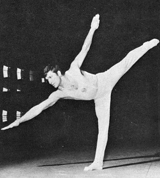

Raitcho Hristov (BUL)
1969 and 1971 European FX Champion

Medal Total
European Championships: 2 Gold
Hristov began acrobatics at age 16 at the sports school in his hometown of Harkovo. Two years later he switched to gymnastics. A two-time European champion on floor exercise, he tore his Achilles shortly before the 1972 Olympics. His final competition was the 1973 European Championships, where he finished fifth on floor. "In spite of my other victories, this result was perhaps the most special to me because I was able to come back after a seven-month break from gymnastics," Hristov said.
Competition Results
1968
Olympic Games: 11th Team, 62nd AA
1969
European Championships: 9th AA, 1st FX
1970
USA-BUL Dual Meet: 6th AA
World Championships: 13th Team, 64th AA, 4th FX
1971
European Championships: 16th AA, 1st FX
1973
European Championships: 23rd AA, 5th FX
This page was created on May 21,
2006 and was last updated on November 05, 2006.
© Gymn Forum